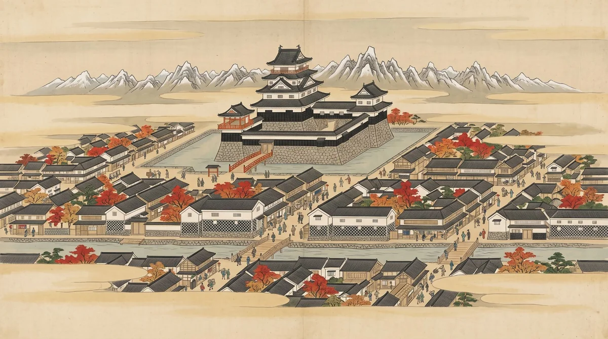
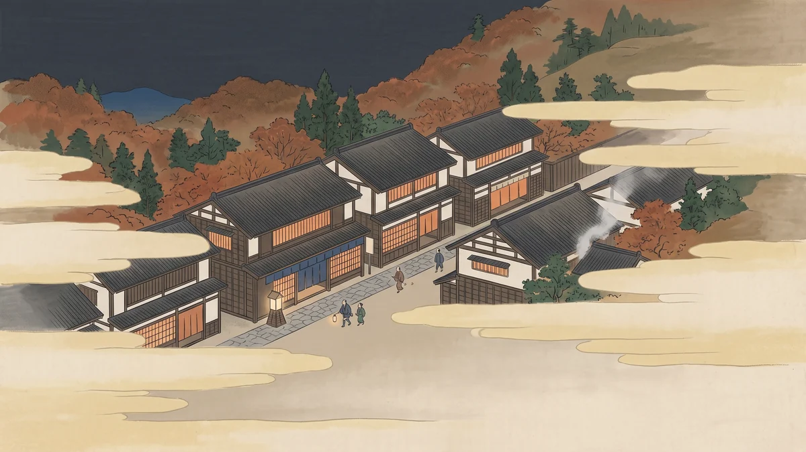

2026.11.14 SAT
チェックインは15時。それまでの半日を、坂がなくて雰囲気のいいところだけつないでみました。
一人でふらっとでも、途中から合流でも、それぞれ好きに歩くのでも大丈夫なように、場所ごとにばらばらに読めるようにしてあります。
この中から気になるところを回るくらいでよいかな、という作り方をしています。
もし他にもほしい情報があれば追加したりもできるので、気軽に声かけてね♪
点線が引いてある言葉は、さわると少し説明が出ます。
押せます 地図の番号を押すと、そのお店や場所の説明に飛びます。右に › が付いた行も同じです。 は、さわると説明が出ます。
土曜日なので、この案内に出てくるところは全部あいています。松本の資料館は火曜休みが多く、中町のお店も火・水休みが多いので、これは運がよかったところです（人力車も火曜休みなので、これも大丈夫）。
ただ、日が短いです。16:41に日が沈みます。城下町を歩くなら11時台に松本駅を出て、14時台には宿へ向かうくらいがちょうどいいと思います。それと、防寒具はしっかり用意してきてください。夕方に急に冷えるというだけでなく、11月半ばの松本はもともと寒い時期です。朝晩は3℃前後まで下がります。
| 松本IC → 松本駅 | 約6km ／ 車 20分 |
|---|---|
| 松本駅 → 城下町 | 約700m ／ 徒歩 10分（ほぼ平坦） |
| 城下町 → 美ヶ原温泉 | 約3.5km ／ バス 15分・タクシー 15分／標高差 35m |
| 松本駅 → 美ヶ原温泉 | 約5km ／ バス 20分・340円前後／タクシー 2,500円前後 |
| 松本IC → 宿 | 車 25分 |
| （参考）美ヶ原高原 | 温泉街から車 1時間。温泉とは別の場所です |
宿・立ち寄り先・バス停・駐車場をまとめた地図です。Googleマップのアプリで開けば、現在地と一緒に見られます。
どこからでも、右下の「目次」でここに戻ってこられます。気になったところだけ見てください。
どの方法にしても、防寒具だけは手元に置いてください。先に宿へ送ってしまうと、いちばん寒い夕方に手元に無いことになります。
ここだけ先に決めておくとラクです。駅のコインロッカーに預けると、宿へ行く前に駅まで取りに戻ることになります。中町からそのままバスに乗る近道が使えなくなるので、歩く道順が変わってきます。
大きい荷物は宅配便で追分屋旅館へ前日までに送っておく。手ぶらで歩けて、戻る必要もありません。送る前に宿へ一報を（0263-33-3378／受付 8:15〜20:30）。
小さめの荷物なら、これがいちばん素直です。街なかはほぼ平ら（標高差3m）で、歩く距離も1.5kmほど。重かったら、中町までタクシーで行って、そこから歩き出すのもありです。
身軽に歩けますが、最後に松本駅まで戻ります。中町から駅までは徒歩10〜15分。戻ってから、駅前のバスターミナル3番のりばで宿行きに乗るか、タクシー。
ロッカーは駅ビルMIDORI松本と、バスターミナル（アルピコプラザ）。小400円〜特大1,000円。
荷物は車に置いたままでいいので、いちばん気楽です。城下町ではどこか一か所に停めて歩き、そのまま宿へ。停める場所は「車で来る方へ」に場所ごとにまとめました。
東口が「お城口」。城下町へは、駅前通りを東へ→本町通りを北へ、で10分ほどです。
ここが乗り物のハブでもあります。美ヶ原温泉行きバスは3番のりば、周遊バスのタウンスニーカーは北コースが21番・東コースが22番。タクシー乗り場もお城口の正面。シェアサイクルの置き場もあります。
駅前通りを東へ → 本町通りを北へ
明治17年創業の和菓子屋。くるみと蜂蜜の「真味糖（しんみとう）」と、ニッキの生地で餡を巻いた蒸し菓子「開運老松」が看板です。宿への手土産をここで済ませておくと、あとが身軽。店内にカフェも併設。
さらに北へ 約250m・4分
女鳥羽川を渡る橋。もとは木の「大手橋」で、たびたび流されました。明治9年、取り壊した大手門の門台の石を使って石造アーチに架け替え、東京の万世橋にならって改名。石だから流されない、千年でも万年でも、という名前です。いまの橋は昭和39年の架け替えで、親柱の照明にその名残があります。
江戸時代はこの川が境目で、北が武家地、南が町人地。渡った先で空気が変わるのはそのせいです。
8. 松本市立博物館（四柱神社から徒歩2分）
2023年10月に松本城公園内から移転した新しい博物館。1階は無料で、休憩がてら入れます。有料は3階の常設展だけ。
9:00〜17:00（1階は21:00まで／受付16:30）／大人500円・高校生以下無料／火曜休（→11/14は開館）／大手3-2-21
9. 松本城（四柱神社から徒歩7分）
お堀のまわりを歩いて外から眺めるだけなら無料。紅葉と黒い天守の組み合わせはこの時期がいちばんきれいです。
ただ、天守に登るのは今回だとちょっと厳しいかもしれません。11月中旬の土曜は紅葉のピークと重なるので、混む日は天守の入口まで60分待ちが出ます。
8:30〜17:00（最終入場16:30）／大人1,200円（電子）・1,300円（当日窓口）・小中400円
本丸庭園（有料エリア）には国宝松本城おもてなし隊が9:00〜16:00ごろ出没します。甲冑姿の武士や忍者で、一緒に写真を撮ってくれます。
10. 国宝 旧開智学校校舎（松本城から徒歩7分）
明治9年、地元の大工棟梁・立石清重が設計施工した。2019年、近代の学校建築として初めて国宝になりました。耐震工事で長く閉まっていましたが2024年11月に再開し、2026年4月、創建150年に合わせて12部屋の展示をリニューアルしたばかり。
9:00〜17:00（入館16:30）／一般700円（窓口）・600円（電子）・小中300円／3〜11月は第3火曜休（→11/14は開館）／駐車20台・無料
※松本城との共通券（電子）が一般1,600円。両方入るなら200円お得です
3つ全部まわると、城下町だけで3時間近くかかります。宿へ向かう日なら、どれか一つくらいがちょうどいいと思います。
女鳥羽川の土手沿いに、小さな店が長屋のように並ぶ通り。「縄のように長い土手」が名前の由来です。2016年から24時間歩行者天国なので、車を気にせず歩けます。
あちこちにカエルの石像がいるのは、昔この川にいたがまた棲めるように、と昭和46年に「カエル大明神」を祀ったのが始まり。
1946年創業。の店です。あんこは北海道産小豆と国産砂糖3種。歩きながら一つ、がちょうどいい規模感。
名前のとおり、天之御中主神・高皇産霊神・神皇産霊神・天照大神の四柱をまとめて祀っています。全部そろっているので「願いごとむすびの神」。明治12年に今の場所へ。境内が開けていて、腰を下ろすのにちょうどいいです。
なわて通りの東の先。昭和の喫茶がそのまま残っている和洋菓子店で、名物はタヌキケーキ——ロールケーキをバタークリームとチョコで包んだもので、誕生は昭和32年ごろ。顔つきがいちいち良い。店内でパフェも食べられます。
沿いの商人町。明治21年1月の大火で約1,500戸が焼け、残ったのは土蔵だけでした。そのあと火に強い土蔵造りが一気に増え、いまの白と黒のの通りになっています。
通りそのものが見どころなので、どこかの店に入らなくても、歩くだけで成立します。
昭和31年（1956）から。の創始者・池田三四郎が設計した店で、開店のとき柳宗悦が見に来て褒めたという逸話つき。椅子もテーブルも松本民芸家具です。深煎りの珈琲と、かための自家製プリン（300円）。
中町通りの手打ちそば屋。そばの実を自店の石臼で挽いています。名物は「みかさね」という三重そば。
ここも店内が松本民芸家具で、まるも・松本民芸館と話がつながります。小上がりと椅子席の両方があるので、足腰が気になる人がいても大丈夫。
隣の宮村町にあった造り酒屋「大禮酒造」の母屋（明治21年）・土蔵・離れ（大正12年）を移築して、平成8年10月に開館した施設。母屋と離れは無料で入れます。天井を抜いたの梁が見どころ。
庭に深さ25m・年じゅう15℃の井戸があり、手漕ぎポンプを自由に使えます。
「測る・計る・量る」道具ばかり約1,300点。棹秤から分銅まで並んでいて、想像よりずっと面白い。令和7年4月から観覧料が無料になりました。
15. ちきりや工芸店／中央3-4-18
中町の民芸店の代表格。全国の焼きものと、松本の手仕事が並びます。
10:00〜17:30／火・水曜休（→11/14は営業）／0263-33-2522
16. 陶片木（とうへんぼく）／中央3-5-10
1975年からの「うつわ屋」。食器専門で、普段使いの一枚を探すならこちら。
火・水曜休（→11/14は営業）／0263-32-0646
ほかに松本の手仕事としては、松本手まり、押絵の技法でつくる立体的なひな人形の松本押絵雛、和紙の松本姉様人形、松本ほうき（野溝ほうき）などがあります。中町・なわての店先で見かけたら、それです。
中町通りから南へ2〜3分。城下町ができる前から飲み水に使われていた井戸で、いまも毎分およそ200リットル湧いています。松本市の特別史跡。明治13年に明治天皇が松本へ来たときは、ここの水がに使われました。
松本の町は扇状地の末端にあたり、あちこちで地下水が湧きます。まとめて「」。
松本城の黒門前から乗れます。2012年に7年ぶりに復活した人力車で、車夫のガイドを聞きながら回ります。2名まで一緒に乗車可。
宿までは行けません（3.5km先の山あいなので）。ただし下町周遊コースなら、中町通り・なわて通りを人力車で回れます。歩くのがしんどい人がいたら、これはけっこう助かると思います。
| 内堀 | 約20分／1人 1,199円・2人 1,998円 |
|---|---|
| 内堀＋外堀 | 約30分／1人 1,699円・2人 2,998円 |
| 下町周遊 | 約50分／1人 3,699円・2人 6,598円（中町・なわてを回る） |
| 運行 | 9:30〜16:30・火曜定休 → 11/14は運行 |
| 予約 | 要予約（080-4806-8177）。料金は現地とWEBで異なることあり |
松本市内をぐるぐる回る小型バス。美ヶ原温泉へは行きませんが、城下町の中で足を休めたいときに便利です。
北コース（駅21番のりば）＝松本城・旧開智学校方面／東コース（駅22番のりば）＝市立博物館・蔵のまち中町・あがたの森方面。
松本市内に41か所のステーション、175台。電動アシストもあり、松本駅お城口広場に e-BIKE が置かれています。
アプリ（HELLO CYCLING）の登録が必要なので、思いつきで使うには少し手間です。使うなら前日までに入れておくと楽だと思います。
松本城の本丸庭園（有料エリア）に、甲冑姿の武士や忍者が9:00〜16:00ごろ出没します。誰が出てくるかはその日しだい。一緒に写真を撮ってくれます。天候により変更あり。
宿のすぐ隣、日帰り温泉「白糸の湯」の2階が研修室になっていて、そば打ち体験ができます。1週間前までの予約が必要（前日・当日は不可）。料金は要問い合わせ。
みんなで集まるので、翌朝にやってみるのも面白いかもしれません。
荷物を駅に預けていないなら、駅まで戻る必要はありません。美ヶ原温泉行きのバスは中町のすぐ近くを通ります。中町通りの西端から北へ2分の「本町」、または千歳橋を渡って「大名町」から乗るのがいちばん短い。
アルピコ交通。松本バスターミナル3番のりば発で、本町 → 大名町 → 松本城・市役所前 と城下町を抜け、東へ向かいます。
| 降りる所 | 松本民芸館（民芸館に寄るなら）／辻堂（まっすぐ宿へ。終点、徒歩1分） |
|---|---|
| かかる時間 | 松本バスターミナルから約20分（中町からなら約15分） |
| 運賃 | 340円前後 ※2026年3月に改定があったため当日ご確認を |
| 本数 | 1時間に1〜2本。時刻は必ず当日確認 |
どこから乗るのか分からなくなったら、ここから地図を開いてください。
バス停はどれも、押すとその場所に地図のピンが立ちます。時刻は アルピコ交通で当日ご確認ください。
城下町は流しのタクシーが多くありません。電話で呼ぶのが確実です。松本駅お城口には乗り場があります。
長野県のタクシーは初乗り1.18kmまで700円、以降215mごとに100円（迎車200円）。
| 中町から | 約3.5km ／ 1,800円前後・15分ほど |
|---|---|
| 松本駅から | 約5km ／ 2,500円前後 |
バス停「松本民芸館」の目の前で、宿までも徒歩7分。バスを降りてここに寄って、そのまま歩いて宿へ、という流れがいちばんラクです。
丸山太郎という松本の商人が、いいと思った民芸品を集めて昭和37年に自力で建てた館です（昭和58年に市へ寄贈）。所蔵は約6,800点、うち700点あまりを常時展示。建物じたいが中町と同じなまこ壁の蔵造りなので、午前中に見た街並みとつながります。庭に大きなケヤキとブナ。
ゆるい上りを 約400m・7分
美ヶ原温泉は1300年あまりの歴史があり、古くは「」と呼ばれていました。
お湯は。露天が3つ（岩・檜・太古の虹）、内湯が2つ（黒御影石・赤御影お座敷）、マイクロバブルの「泡エステの湯」、それに足湯テラス。貸切風呂「辻の花」もあります。
美ヶ原温泉で唯一の日帰り温泉。白壁の蔵づくりの建物で、露天もあります。2階はそば打ち体験の研修室。
宿の風呂で足りているなら無理に行く必要はありませんが、朝、散歩がてらにはちょうどいい距離です。
ドメーヌ・ド・ユノハラ／Cave a vin de Yunohara（ワイナリー2階）
追分屋が2023年に始めた自社ワイナリー。長野県産そば粉のガレットと、自社のワイン・シードル。
ワインショップ 10:00〜14:30／カフェ 〜14:00 L.O.／レストラン 11:30〜13:30 L.O.
昼で閉まるので、行くなら翌日の午前。定休日は要確認です。
「旧山辺学校校舎」は歩いて行く場所ではありません。明治18年の八角塔をもつ擬洋風校舎で、長野県宝。観覧料も無料でいい建物なのですが、追分屋からは直線1.4km・徒歩25分前後、しかも20mほど上り。美ヶ原温泉線のバスも前を通りません（最寄り「惣社」から徒歩15分）。
擬洋風の校舎が見たいなら、松本城のそばの旧開智学校のほうが近くて、しかも国宝です。旧山辺学校へ行くなら車で。
城下町は一か所に停めて、そこから歩くのがおすすめです。なわて通りと中町通りは歩いて3分なので、どちらかの駐車場ひとつで足ります。
松本ICから城下町まで約20分、宿まで約25分。
松本城大手門駐車場（立体）／大手2-3-10
現地の看板は「東洋計器大手門駐車場」です。2023年4月からの愛称で、正式名称は変わっていません。カーナビや看板でこの名前が出ても、ここで合っています。
437台と大きく、松本城・なわて・中町のどこへも歩ける位置。迷ったらここ。
蔵のある街 中町駐車場（中町商店街振興組合）
通り沿いで約10台。係の人がいるので、店のことを聞けます。5分以内なら無料。
校舎の西側・南側に無料の共通駐車場が約20台。ただし台数が少なく、見学中の駐車に限られます。満車のことが多いので、大手門駐車場に停めて歩くほうが安心かもしれません（松本城を通って徒歩7分）。
| 女鳥羽そば | 店前3台＋第2駐車場4台 |
|---|---|
| 松本民芸館 | 館前4台＋第2駐車場15台 |
| 白糸の湯 | 広め（50台前後） |
| 追分屋旅館 | 35台・無料・先着順 |
チェックインは15時ですが、その前に駐車場だけ使わせてもらえることがあります。
温泉地の宿は、チェックアウトのあとの昼間は駐車場が空いていることが多いからです。
もしOKなら、車も荷物も先に宿へ置いて、手ぶらでバスに乗って城下町へ出るという手が使えます。
帰りは歩いてもバスでも好きにできて、駐車場所を探す手間もなくなります。
この案内を逆から読む形になりますが、身軽さでは、たぶんこれがいちばんです。
できるかどうかは宿の都合次第なので、早く着いてしまいそうなら、 まず一本電話を入れてみてください。
受付は8:15〜20:30。当日の朝でも間に合います。
チェックアウトは10:00、日の出は6:24。
・白糸の湯は7:00から。徒歩2分なので朝風呂の梯子ができます（400円）
・松本民芸館は9:00開館。チェックアウト前にひと回りできます（徒歩7分・大人500円）
・ワイナリーのカフェは10:00から。ガレットで軽く朝食がわりに
・帰りのバスも美ヶ原温泉線。辻堂が始発なので座れます
松本の11月の平年値は、日中の最高が13.9℃、朝晩の最低が2.6℃（月平均7.8℃）。羽織りもの一枚ではしのげません。コートかダウン、手袋、耳まで覆えるものまで用意してきてください。昼の陽射しだけ見て薄着で出ると、たぶん後悔します。
とくに冷えるのは、この3つの場面です。
・バスを待つあいだ。宿行きは1時間に1〜2本。本町の停留所は屋根のないポールです
・日が落ちてから。16:41に日没、17:10には暗くなり切ります
・翌朝。いちばん寒いのはここで、白糸の湯の朝風呂も民芸館も外を歩きます
歩いているあいだは意外と平気で、止まった瞬間に効いてきます。脱げるように重ねておくのがいちばんラクです。
このコースは雨でもだいたい成立します。なわて通りは軒が続き、中町通りは店から店への距離が短く、蔵シック館・はかり資料館・珈琲まるも・市立博物館・松本民芸館はすべて屋内。省略することになるのは千歳橋の眺めと源智の井戸くらいです。
足元は石畳で滑るので、靴だけは気をつけて。市立博物館の1階は無料なので、雨宿りに使えます。人力車は雨天中止のことがあります。
